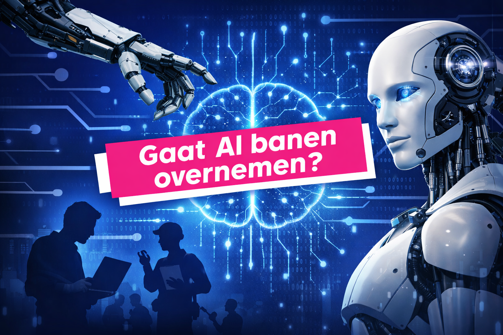
Journalistieke Explainer & Sound Design
Voor CBS Nederland monteerde ik een video over de impact van AI op werk en maakte ik het achtergrond-sounddesign voor de bijbehorende interactieve site.
Ik ben Jerôme Toussaint. Mijn stijl ligt tussen film, videografie, graphics production en digitale experiences: sterk in sfeer, clean in afwerking en altijd gericht op beeld dat blijft hangen.
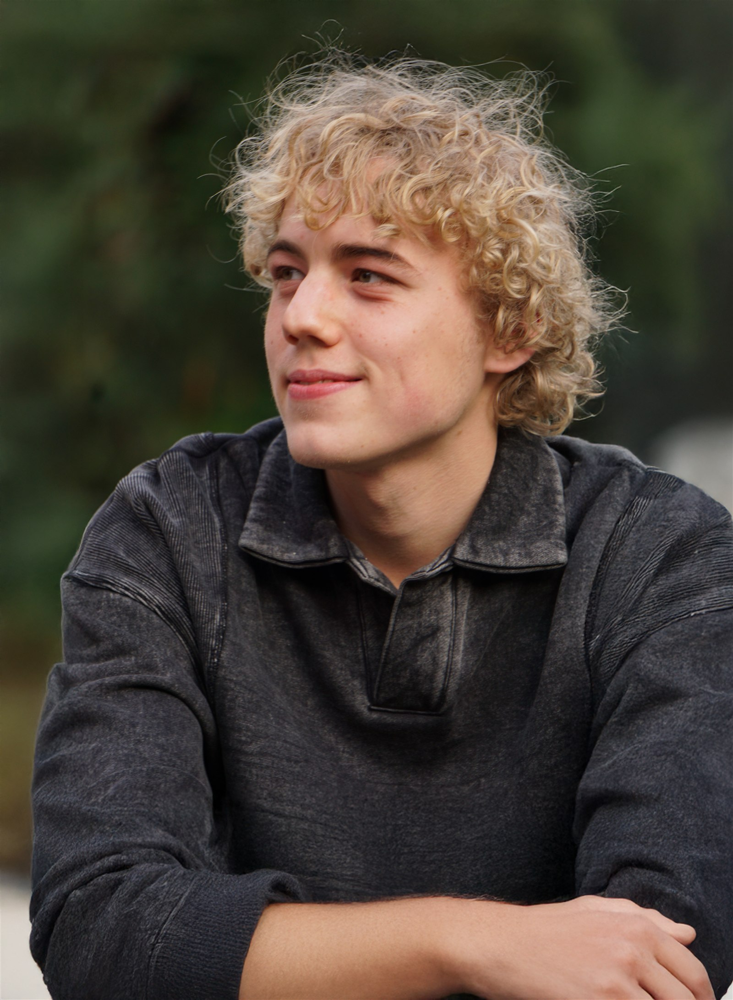
Bekijk hier al mijn projecten en filter op het soort werk dat je wilt zien.

Voor CBS Nederland monteerde ik een video over de impact van AI op werk en maakte ik het achtergrond-sounddesign voor de bijbehorende interactieve site.
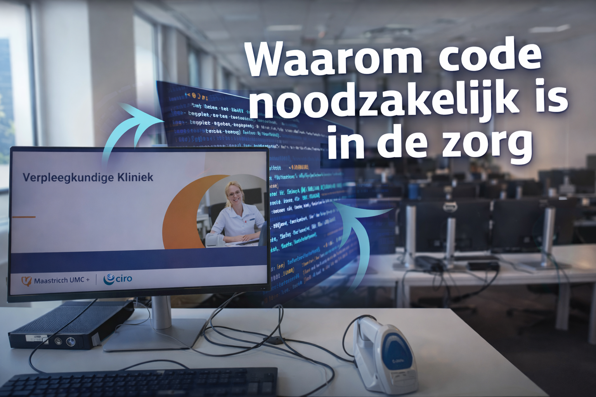
Een instructieve video over de rol van code in de zorg, plus het webdesign dat ik maakte voor de bijbehorende Bit for Bit-site. Dezelfde lijn loopt door in Kunst met Code, waar code ook als praktisch en creatief medium wordt ingezet.
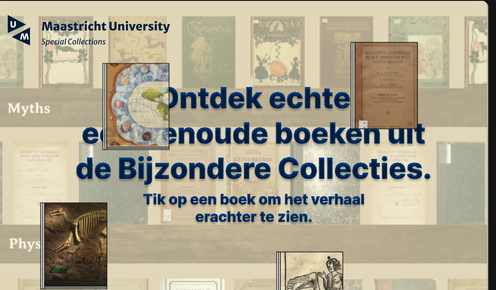
Een interactieve ontdekkingservaring voor Maastricht University waarin oude boeken, verhalen en thema's spelenderwijs worden onthuld.

Generatieve live visuals die ik maakte voor artist Gogo, ontworpen om de muziek realtime te versterken en het publiek mee te trekken in een audiovisuele ervaring.
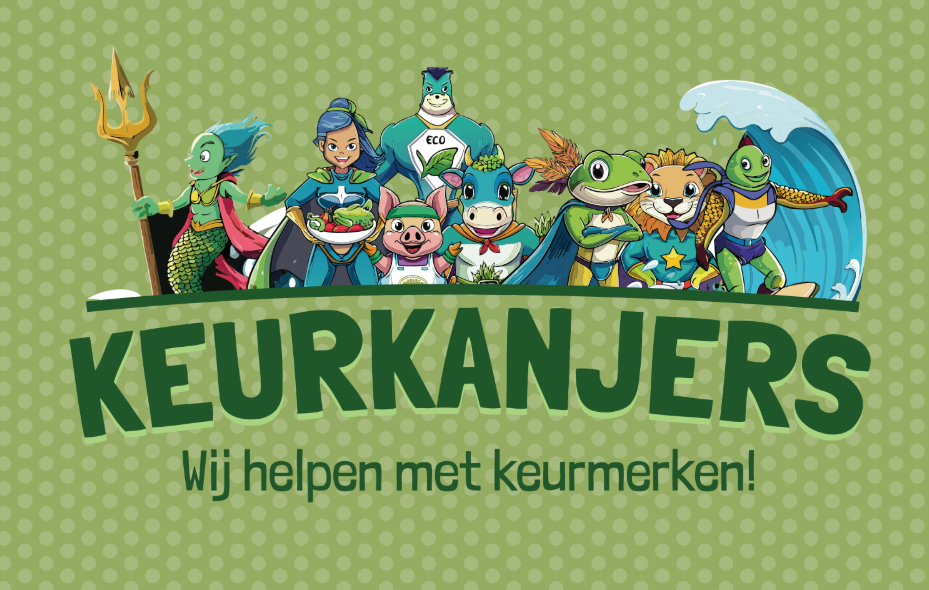
Een cross-mediale campagne met een site die ik ontwikkelde, terwijl Kay het design maakte met navigatie naar Keurkanjers, Over ons en Keurmerken.
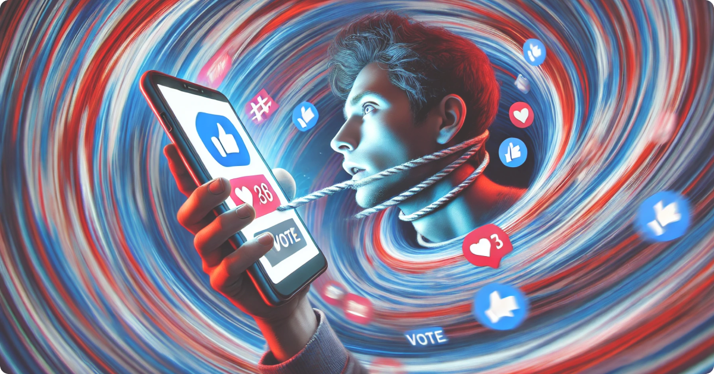
Een digitaal magazine waarin content, layout en front-end samenkomen in een visueel redactionele stijl.
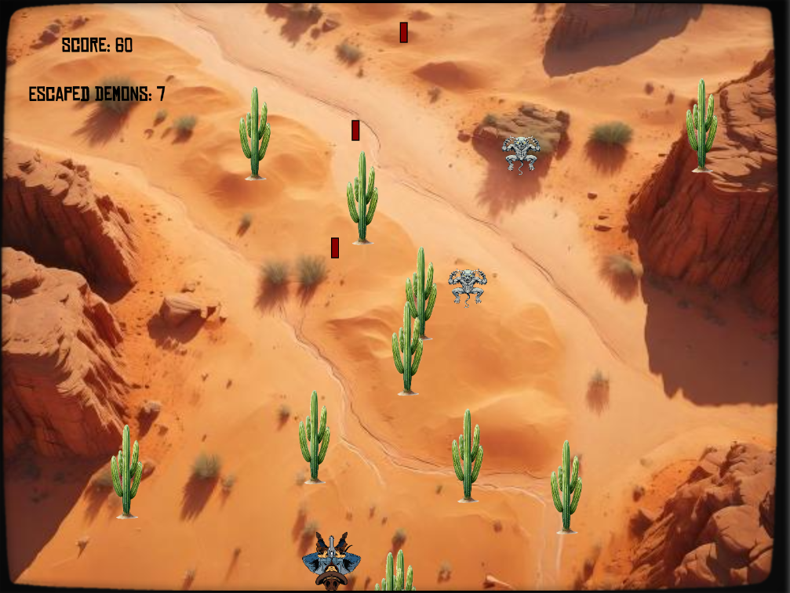
Een speelse interactieve ervaring waarin code, visuals en feedbackloops samen een eigen wereld bouwen.
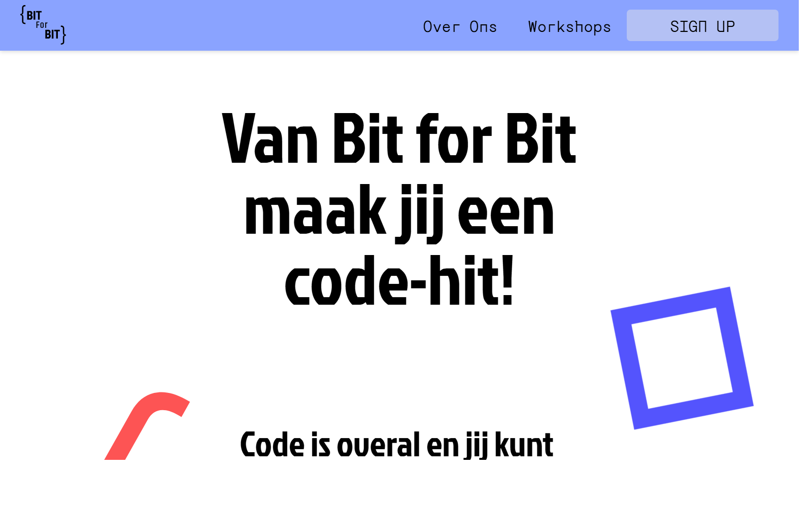
Een workshopconcept waarin code tastbaar en creatief wordt gemaakt, en dat inhoudelijk aansluit op Waarom code noodzakelijk is in de zorg.
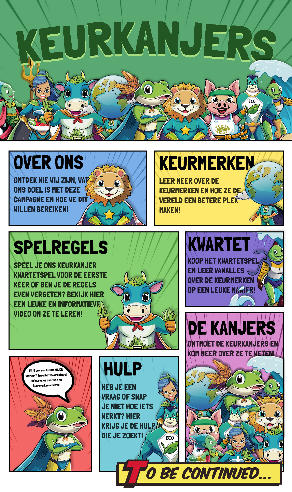
Over het project
Samen met Kay en Nils werkte ik aan een campagne rond keurmerken zoals Beter Leven, EKO, Fairtrade en MSC. De site die je hier ziet bouwde ik uit als digitaal startpunt van de ervaring.
Cross-mediale aanpak
Het concept liep door in website, video, social content en fysieke uitingen zodat het verhaal op meerdere plekken consistent bleef. De homepage heeft een duidelijke header waarmee bezoekers direct naar Keurkanjers, Over ons en Keurmerken worden geleid.
Mijn rol
Ik ontwikkelde de site en vertaalde het concept naar een werkende webervaring. Kay maakte het design, inclusief de comic-achtige vakverdeling, de felle visuele stijl en de navigatie-opzet.
Fysieke uitwerking
Naast de site werkte het concept ook goed als tastbare campagne. Het uitlegboekje en het kaartdoosje geven de wereld van Keurkanjers meer karakter en maken het idee van leren via spelen meteen voelbaar.


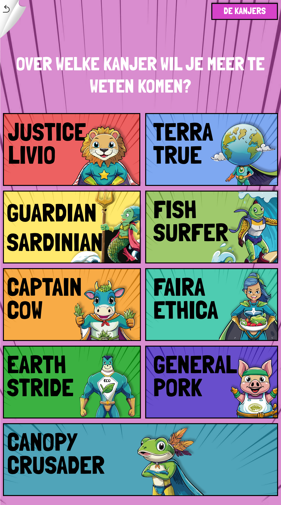
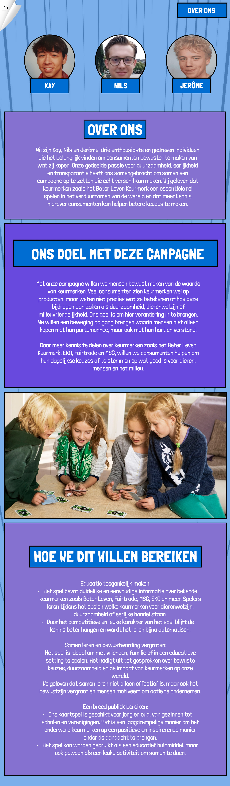
Audiovisuele ervaring
Voor artist Gogo maakte ik live visuals die niet alleen als decor werken, maar als actief onderdeel van de performance. Tijdens concerten en festivals versterken dit soort beelden de muziek en trekken ze het publiek mee in een gezamenlijke audiovisuele ervaring.
Live uitvoering
Als VJ ontwierp ik generatieve visuals die reageerden op live muziek. Met TouchDesigner en p5.js bouwde ik een systeem van bewegend beeld dat de set van Gogo aanvulde, emoties versterkte en de performance visueel liet leven in realtime.
Luister naar Gogo
Mijn werk draait om de combinatie van gevoel voor beeld, technische uitwerking en mijn passie voor film en visueel vertellen.
Ik werk veel in Figma, Photoshop, Adobe Creative Cloud, Premiere Pro, Visual Studio Code en Processing. Code is voor mij vooral een ondersteunende skill binnen visuele en interactieve projecten: sterk genoeg om ideeën technisch te realiseren, maar mijn grootste kracht ligt in concept, beeld, montage en de filmische afwerking. In Unreal Engine focus ik me vooral op virtual production en het bouwen van digitale werelden met een cinematografische sfeer.
Heb je een project in gedachten rond video, visuals, branding of digital storytelling? Plan een gesprek en ik neem contact met je op.